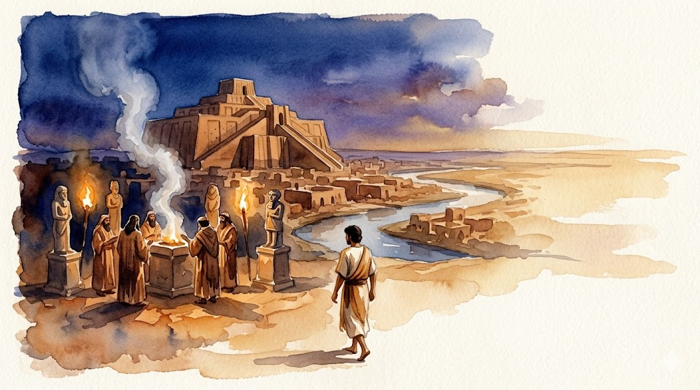
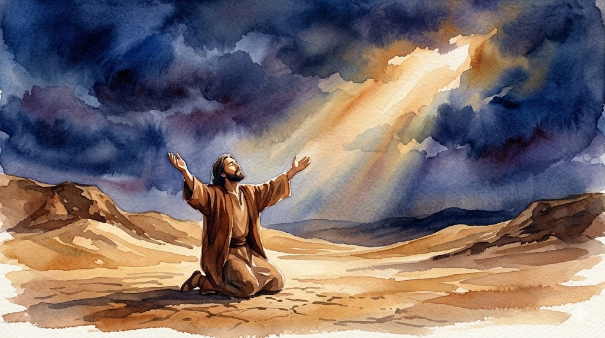
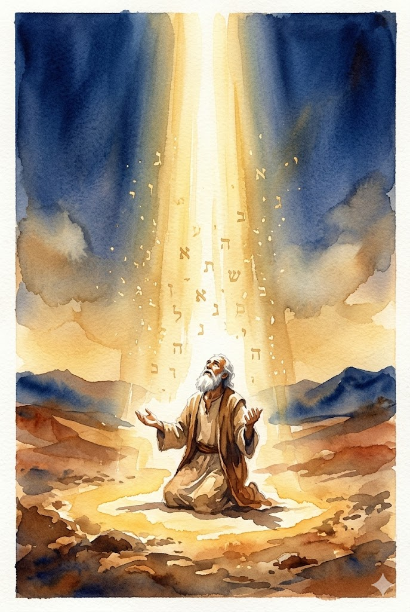
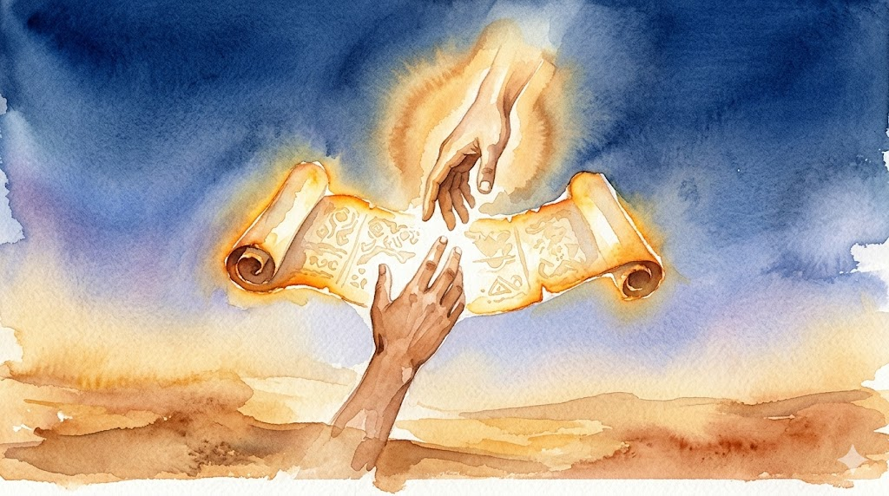
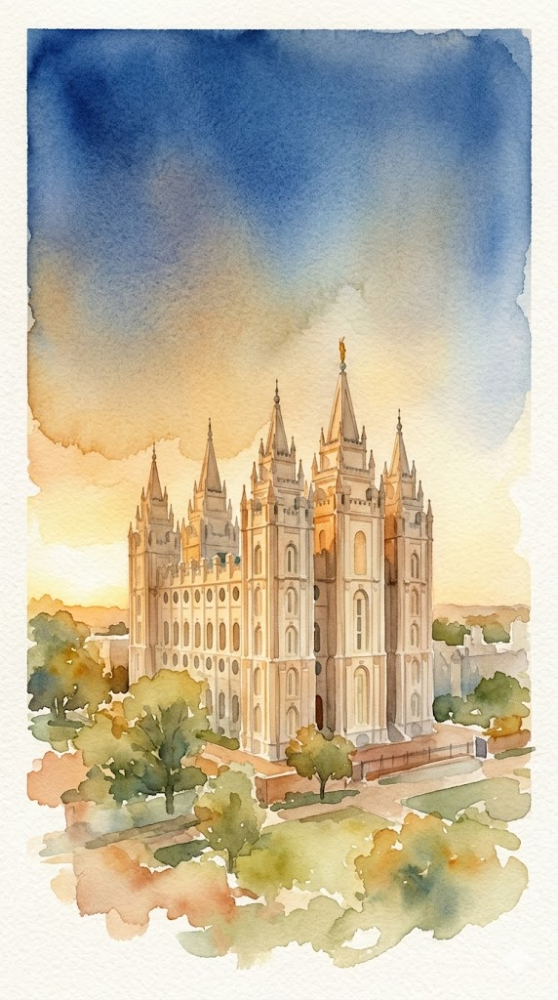
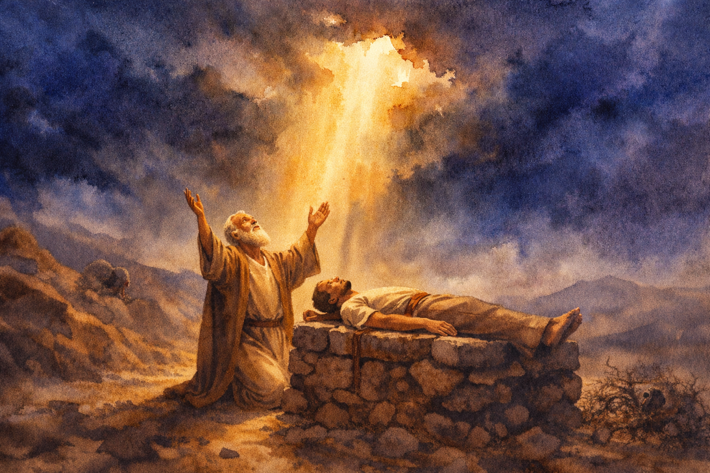
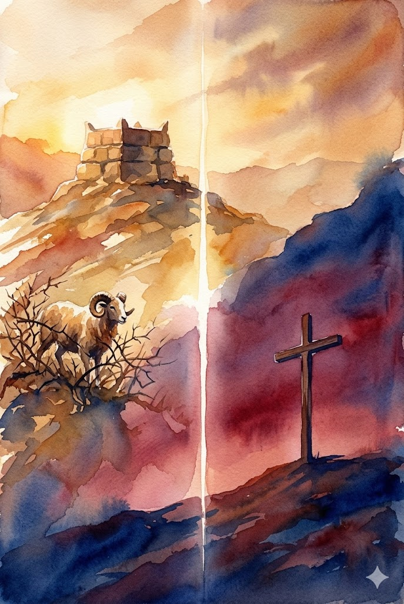
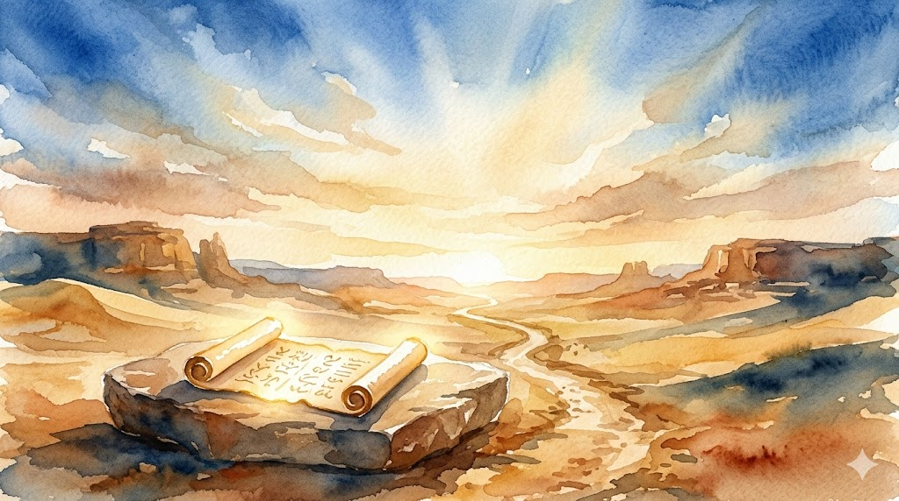

Historical Context
Abraham's World: Ur of the Chaldees
Let's Read: Abraham 1:5–7
"My fathers having turned from their righteousness…unto the worshiping of the gods of the heathen…[they] offered up…their children…"
- Terah had abandoned true worship; Abraham's own life was threatened by the priest of Elkenah
- The covenant begins in violence and rupture — not comfort

Covenant Membership Begins With Desire, Not Genealogy
Let's Read: Abraham 1:2 and Galatians 3:26–29
Notice how many times Abraham uses the word desiring
Abraham didn't inherit his covenant — he chose it. Desire is the covenant-initiating faculty.
Galatians 3:26–29 teaches the same: we are Abraham's seed by faith, not blood.
Elder Neil L. Andersen
Quorum of the Twelve Apostles
On Desire and Identity
Our Inner Desires Become Our Choices
"We are all influenced by our families and our culture, and yet I believe there is a place inside of us that we uniquely and individually control and create.… Eventually, our inner desires are given life and they are seen in our choices and in our actions."
— Elder Neil L. Andersen · "Educate Your Desires" · ChurchofJesusChrist.org
💭 Discuss: Abraham's desire for righteousness preceded everything — his calling, his covenant, his test. What does that tell us about where covenant life actually begins?
Covenant Membership Begins With Desire, Not Genealogy
💭 Personal: When did you first feel that your testimony was yours — not inherited from your parents or your culture?
📖 Doctrinal: If the covenant is adoptive, not biological, what does that mean for how we think about who belongs to it?

The Covenant Changes Who You Are
Let's Read: Genesis 17:5
"Neither shall thy name any more be called Abram, but thy name shall be Abraham; for a father of many nations have I made thee."
- Name-giving as divine authority — In the ancient Near East, to name something is to define its reality. God speaks "Abraham" before a single descendant exists. The name creates what it declares.
- The pattern is deliberate — Jacob becomes Israel, Simon becomes Peter. In every case the new name is a commission spoken in advance of its fulfillment, not a reward granted after it.
- The deeper theological point — You cannot receive a covenant of this magnitude as the person you were. The covenant requires — and produces — a new self capable of inhabiting it.
The Covenant Changes Who You Are
📖 Discuss: He didn't leave Ur as Abraham — he became Abraham through the covenant. What are you becoming through yours?

The Covenant: Blessings Received and Obligations Carried
Let's Read: Genesis 12:2–3
"…and thou shalt be a blessing…and in thee shall all families of the earth be blessed."
📖 Discuss: What are the blessings and promises of the Abrahamic Covenant?
💡 Discuss: What are our obligations as inheritors of Abraham's seed?
💭 Application: In your neighborhood or family — not in a calling — what does it look like to be a blessing as a covenant bearer?

The Covenant Reaches Into Eternity
Let's Read: D&C 132:20–24 and D&C 131:1–4
"…then shall they be gods, because they have no end…and shall inherit thrones, kingdoms, principalities, and powers…"
- Land — Not just Canaan. The inheritance is exaltation itself — eternal thrones, kingdoms, dominion (D&C 131:1–4; 132:20–24)
- Seed — Not just biological descendants. Eternal increase — the family continues beyond death, forever (D&C 132:28–32)
- Temple covenants are Abrahamic covenants — When we enter the temple, we are stepping into the same promises Abraham and Sarah received on Moriah
💭 Discuss: If the covenant promises are eternal in scope, how does that change the weight of the ordinances you have already received?
Hebrew Term
עֲקֵדָה
Akedah — "The Binding"
The term derives from the Hebrew root עקד (aqad) — "to bind." It refers to Genesis 22, the account of Abraham's binding of Isaac upon the altar on Mount Moriah. In Jewish tradition, the Akedah is among the most studied and theologically significant passages in all of scripture — a test of faith, a covenant sealed in obedience, and for Latter-day Saints, a profound similitude of the Father and the Son.

The Covenant Is Tested
Let's Read: Abraham 3:25
"And we will prove them herewith, to see if they will do all things whatsoever the Lord their God shall command them."
Mortality is designed as a proving ground. The Akedah is the apex of that proof in Abraham's life — When God asks for the promise back, He is not withdrawing it — He is asking whether Abraham loves the Giver more than the gift.

He Loved the Giver More Than the Gift
Let's Read: Hebrews 11:17–19
"By faith Abraham…offered up Isaac…accounting that God was able to raise him up, even from the dead; from whence also he received him in a figure."
💭 Personal: Have you ever been asked to offer something back to God that He had given you — a calling, a relationship, a plan that felt like your Isaac?
📖 Doctrinal: Isaac never resists. He carries the wood, asks about the lamb, and surrenders willingly. What does his obedience teach us about the Son who would one day do the same?

"A Similitude of God and His Only Begotten Son"
Let's Read: Jacob 4:5
"…Abraham's offering…was a similitude of God and his Only Begotten Son."
| The Akedah — Genesis 22 | The Atonement |
|---|---|
| Isaac — "only begotten" of Abraham & Sarah (Heb. 11:17) | Jesus — Only Begotten of the Father (John 3:16) |
| Isaac carries the wood (v. 6) | Christ carries His own cross (John 19:17) |
| A ram substituted — Isaac is spared (v. 13) | No substitution. The Father does not stop what Abraham was stopped from finishing. |
| Jehovah-Jireh — "YHWH will be seen" (v. 14) | On a hill outside Jerusalem — God is finally, fully seen |
📖 Discuss: In the Akedah a ram appears. In the Atonement there is no ram. What does that difference tell us about the Father's offering?

The Covenant Is Alive in This Room
Every person here who has been baptized has entered it. Every person who has made temple covenants has stepped into the full weight of what Abraham carried. We are not spectators to this story. We are the seed.
We are beneficiaries — of a covenant so old it predates Israel, so deep it reaches into eternity. That faith is our inheritance.
We carry an obligation — not to perform blessings, not to accumulate them. To be one. The covenant is not a transaction. It is a transformation.
Let's Read: D&C 132:30–32
"Abraham received all things, whatsoever he received, by revelation and commandment, by my word, saith the Lord, and hath entered into his exaltation…"